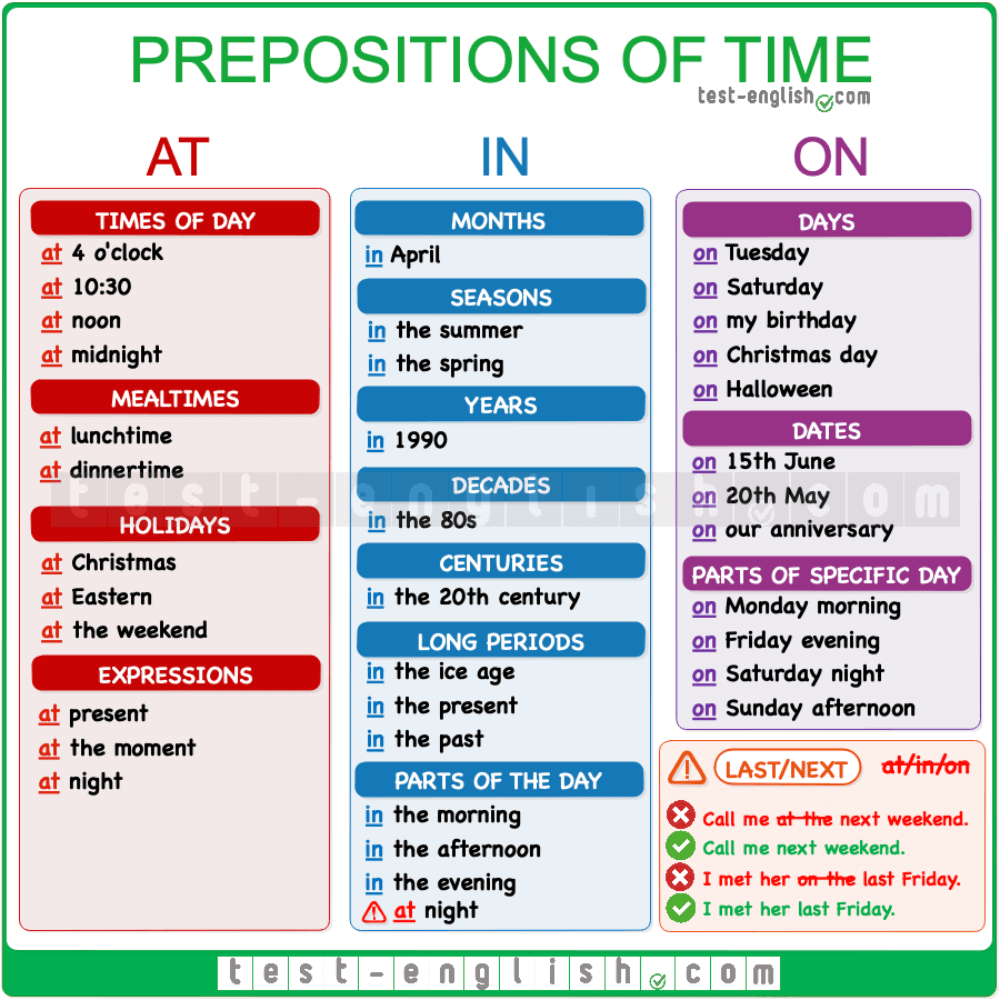
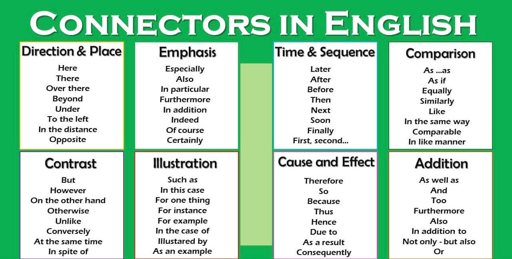

Conditionals
- Type 0 - Present - Present
- Type 1 - Present - Future
- Type 2 - Simple Past - Would Inf
- Type 3 - Had 3erC - Would Have 3raC (Past Perf - would + have + Past Participle)
Useful questions
- Excuse me, could you repeat that? please
- What do you mean?
- Sorry I lacked some meaning, could your repeat again?
- Sorry, I didn't understand.
Some phrasal verbs
- to give away -> donar
- to drop out of -> dejar algo "dejar un equipo" "abandonar el futbol"
- to give up -> abandonar/dejar de hacer algo como fumar, comer azucar
- to go back -> volver
- miss out -> perderse
- leak it -> filtrarlo
- sneak out -> escaparse
- get along -> llevarse bien

- despite -> a pesar de
- stand -> quedarse
- lack -> faltar
- odds -> posibilidades
- meanwhile -> mientras tanto
- run out -> quedarse sin
- rather -> preferir
- swear -> jurar
- lead us -> liderarnos
- let it go -> dejar ir
- tidy -> prolijo
- leave -> salir
- round up -> cerrar una idea
- fill the moment -> llenar el momento
- face -> enfrentar
- if you don’t mind -> sino te molesta
- behave -> comportarse
- sue -> demandar
- shun -> evitar algo
- blanketed in -> cubierto en
- blanket -> cubrir
- soil -> tierra
- bother -> molestar
- can't stand -> no puedo soportar
- hit -> golpear
- appoiment -> cita
- bored -> aburrido
- sun tan -> tomar sol
- tan -> broncear
- cherries -> celebrar
- too much sadnees to me or for me ->
- might -> podría
- flooded -> inundó
- hunger - hambre
- she is hungry - tiene hambre
- anger - enojo
- she is angry - esta enojada
- take them with me ( con migo)
- stand -> quedarse
- lack -> faltar
- odds -> posibilidades
- annoying -> irritante
- drop -> gota
- binchewatch -> atragantarse mirando
- hose (hous) -> manguera
- osteopath -> ostiopata
- step away -> alejarse
- stillness -> quietud
- regarding of that -> "concerniente a eso"
- fair -> hada
- fairytale -> cuento de hadas
- each other
- pleasant -> placentero
- arouse -> levantarse
- wool -> lana
- ashamed -> avergonzado
- drag you for some meters ->
- grab you and carry you for me
- meet -> conocer/encontrarse a una persona
- look at -> mirar
- to appear -> aparecer
- to speak out -> hablar
- to struggle -> luchar
- bored -> aburrido -> get bored with -> Aburrirse con algo
- raisin -> pasa de uva
- hunger -> noun = hambre
- hungry -> adjective = hambriento
- healthy -> saludable
- sight -> suspiro
- disappointed -> desilusionado
- ring the bells -> tocar los timbres
- tights -> calzas
- point of no return
- realisation moment
- peacock -> pavo real
- Tipsy turvy..... confused, feeling inverted, sentirse torcido... raro... dado vuelta.
- proud ->
- bothered me
- abandoned -> abandonado
- paws (pOS)
- arrive -> llegar
- get to Misiones -> llegar a missiones
- bench -> banco